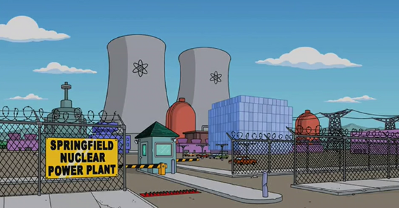

HOMERO SAMPSON
INGENIERO NUCLEAR

Perfil Profesional
Ingeniero Nuclear experimentado con mas de 10 años de experiencia con gran dedicación y comprometido en areas nucleares, especializado en fusion nuclear y plasma. Experiencia como profesional en la planta nuclear de Springfield, y como docente en las universidades de Springfield y Harvard.
EXPERIENCIA
- Planta Nuclear de Springfield - Fecha: 06/2010 - Actualidad
- Universidad de Harvard - Fecha: 03/2015 - 03/2020
- Universidad de Springfield - Fecha: 03/2020 - Actualidad
Jefe de Control de seguridad y nivel de radiaciones en reactores nucleares
a cargo del area especializada en fusión nuclear, electrodinamica y el plasma.
Jefe de Catedra de Fisica Nuclar 2
Jefe de Laboratorio de Fusion Nuclear y Plasma
ESTUDIOS
- Tecnico Elenctronico
- Ingeniero Fisico Nuclear
- Doctorado en Ciencias Nucleares
Escuela de Educación Tecnica N°5 Dr Salvador Debenedetti
Universidad de Buenos Aires
Universidad de Harvard
IDIOMAS |
NIVEL DE CONOCIMIENTO |
|---|---|
| Ingles | Experto |
| Portugues | Intermedio |
| Chino | Experto |
| Aleman | Experto |